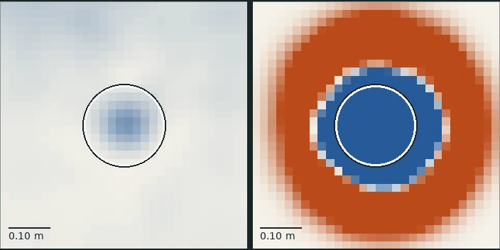

Deformable dynamics benchmark
Sand, cloth
and cable
NeurALL studies whether shared learned dynamics can reproduce sand, cable and cloth and exchange forces with other bodies.
Explore results
Latest evidence
Loading the benchmark record…
Experiments
Rollout results
Baselines and prior work
Reference comparisons
Each card gives the task, conditioning and metric for its result.
Evaluation
Benchmark protocol
- Rollout conditioning
- Prescribed replay supplies the recorded rigid trajectory. Two-way evaluation advances the interacting bodies from their own predicted states.
- Accuracy and stability
- Compare complete trajectories, surface shape, settled drift, reaction forces and penetration against Newton. State position and runtime metrics with their units and time intervals.
- Matched references
- Use the same scenes, initial states and rollout protocol for head-to-head comparisons. Published results retain their original conditions and checkpoint provenance.